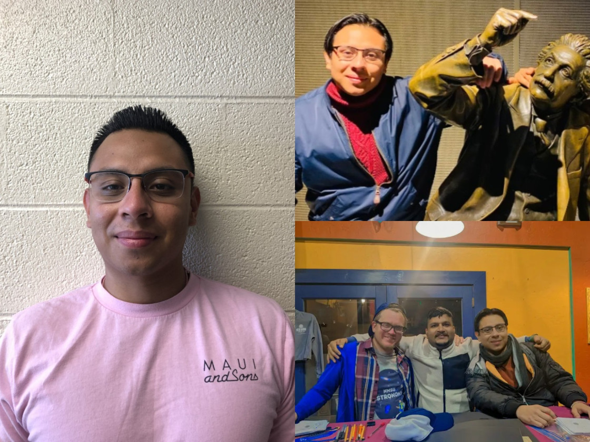
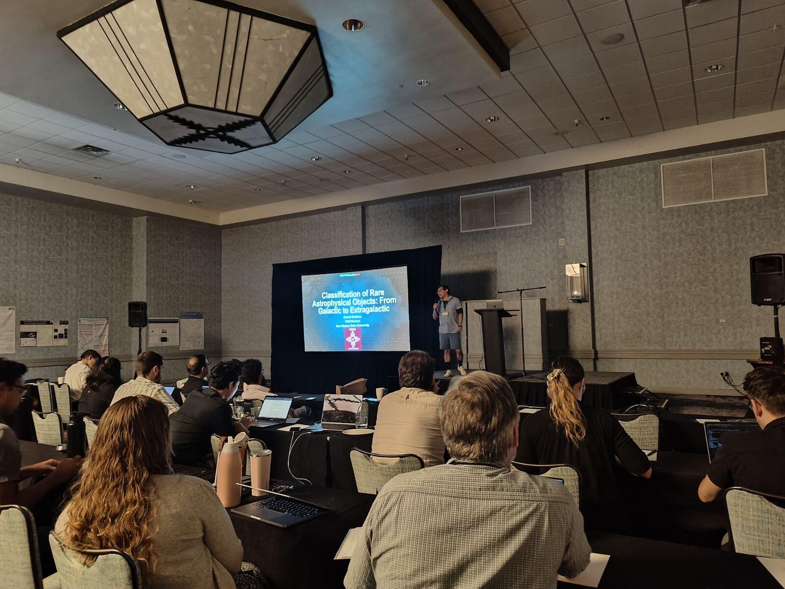
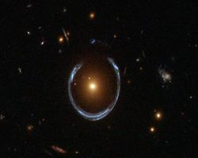
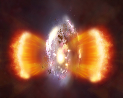
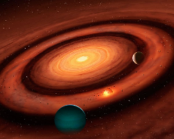
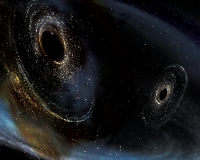

about
I grew up in Santa Barbara, California, and received a BA in Physics from Bard College in 2018. My specialization in machine learning began in 2016 through a three-year collaboration with scientists at Las Cumbres Observatory, focusing on automated discovery pipelines. After college, I spent three years at Yardi Systems, where I rose to a consultant role and led client-facing projects translating complex systems into practical solutions.
In 2021, I joined the Ph.D. program at New Mexico State University. My research leverages artificial intelligence to discover and study rare astrophysical phenomena, leading to published work in both galactic and extragalactic science. I have served as a Principal Investigator at Gemini North for the study of Lyman-alpha blobs and contribute to the LSST Microlensing Science Collaboration. I have experience in theoretical astrophysics, including large-scale hydrodynamical simulations of particle-gas dynamics, and expertise applying machine learning to investigate the physics of complex systems. Beyond research, I am dedicated to fostering STEM engagement as a Board Member for the Santa Barbara County Science & Engineering Fair. I am committed to open science and developing reproducible, data-driven frameworks that bridge the gap between theoretical modeling and the next generation of time-domain surveys.


Interests

Microlensing
I specialize in the detection and simulation of gravitational microlensing in wide-field surveys. I developed MicroLIA, the first machine-learning engine designed for real-time microlensing classification in sparse-cadence data. As an active member of the LSST Microlensing Science Collaboration, I focus on integrating these discovery pipelines into live alert brokers to identify both stellar and exotic microlensing events.

Lyman-alpha Blobs
I developed pyBIA, the first scalable machine-learning framework to identify high-redshift Lyman-alpha blobs (the largest and most distant nebulae in the universe) using only broadband imaging. This multi-stage pipeline overcame the limitations of expensive narrowband data by integrating ensemble classifiers, unsupervised anomaly detection, and convolutional neural networks to identify candidates directly from broadband morphology and color. By optimizing for weakly supervised settings, pyBIA enables blind searches for these rare sources across massive wide-field surveys like COSMOS and LSST. I have also led spectroscopic follow-up efforts to characterize these distant nebulae as a Gemini North Principal Investigator.

Protoplanetary Disks
I addressed the "mass budget problem" of planet formation through theoretical modeling of solid concentration in turbulent disks. Using the Pencil Code, I ran multi-species 3D self-gravitating simulations of the streaming instability (SI) and showed that overdense SI-induced filaments generate optically thick (sub-)millimeter emission. As part of this work, I developed and published protoRT, a radiative transfer framework that accounts for dust scattering to produce synthetic ALMA observables. Using this pipeline, I demonstrated that standard optically thin assumptions fail to account for unresolved small-scale structure, providing a critical mass correction for observations of disks undergoing planetesimal formation.

Dark Matter
I utilize microlensing as a probe for compact dark matter, including primordial black holes (PBHs) and Boson Stars. By simulating realistic LSST-like light curves, I developed unsupervised anomaly detection and Bayesian model selection frameworks to detect rare dark-matter-induced transients, demonstrating how machine learning can enhance PBH sensitivity in next-generation time-domain surveys. I have also applied these methods to identify microlensing events directly from sparse time-series data, enabling real-time filtering of transients with minimal assumptions about signal shape.
Food!
I’m willing to drive up to five hours (one way) for yummy food.
On the Mass Budget Problem of Protoplanetary Disks: Streaming Instability and Optically Thick Emission
Published in The Astrophysical Journal, this work uses 3D self-gravitating simulations and my protoRT radiative transfer code to show that overdense filaments that arise due to the streaming instability generate optically thick (sub-)emission. We demonstrate that standard observational assumptions lead to significant underestimates of disk mass, requiring critical corrections for planet formation theory.
Research News
A Hybrid Ensemble and Deep Learning Framework for Detecting High-Redshift Lyman-alpha Blobs in Broadband Surveys
I recently submitted my pyBIA framework to the Publications of the Astronomical Society of the Pacific, presenting an automated detection pipeline for Lyman-alpha blobs. By combining several machine learning models in sequence, this pioneering pipeline enables large-scale blind searches for these rare, distant nebulae using only broadband imaging data from surveys such as COSMOS and LSST. Paper has been accepted and is currently in press.
Dark classification matters: searching for primordial black holes with LSST
Published in the Journal of Cosmology and Astroparticle Physics, this research utilizes unsupervised anomaly detection and Bayesian model selection to search for compact dark matter. We demonstrate how machine learning enhances sensitivity to primordial black holes, providing new constraints on dark matter abundance in the Rubin era.